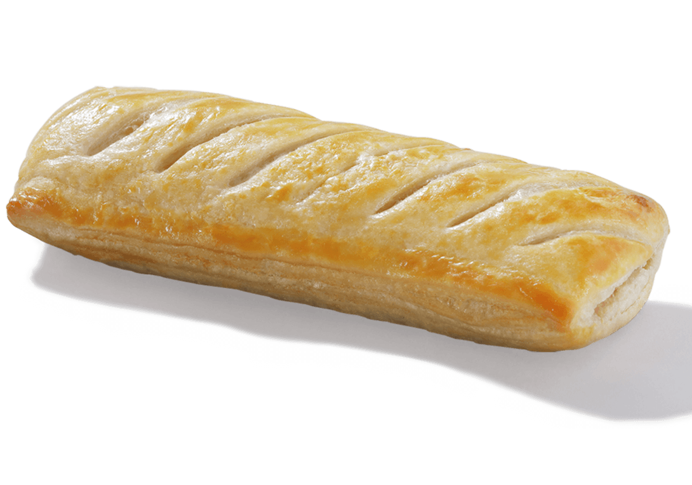
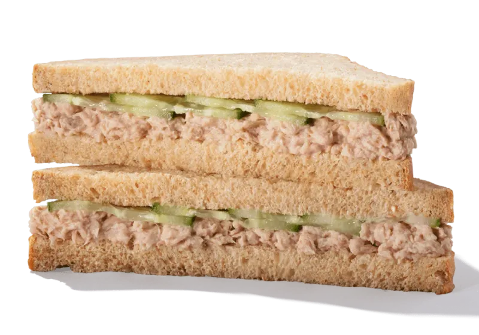
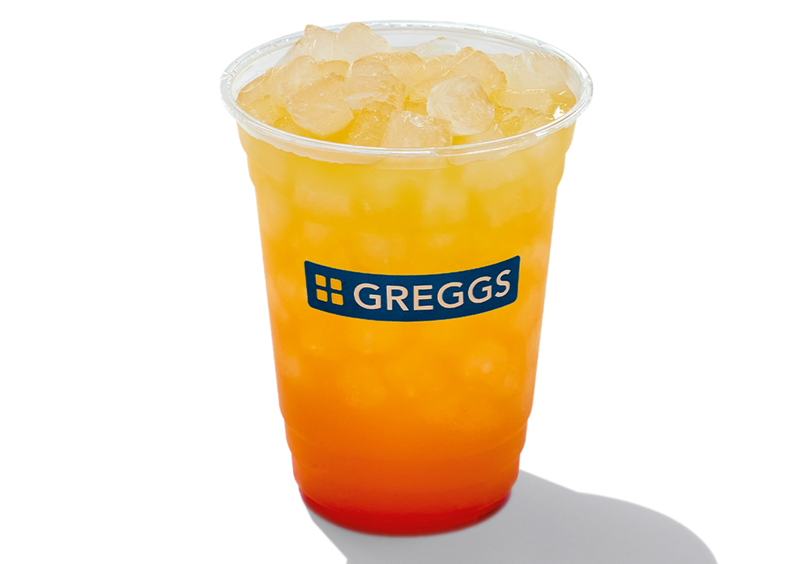
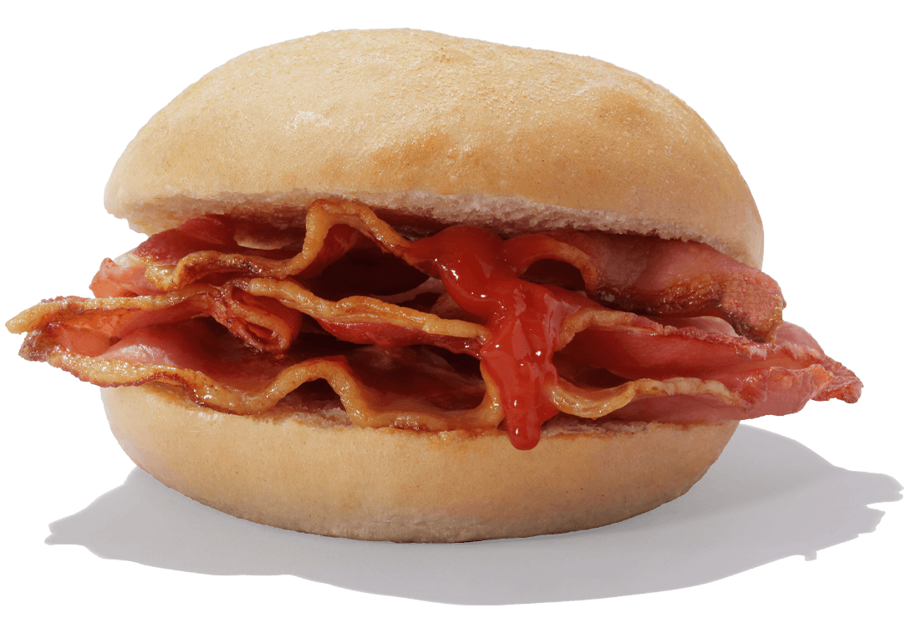
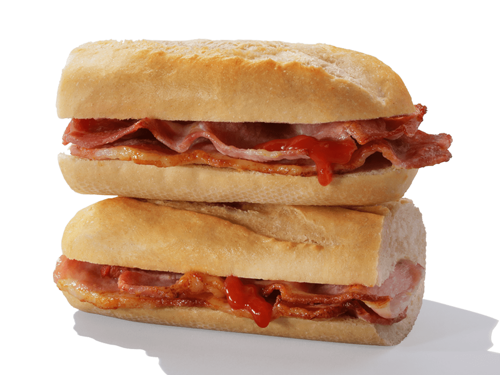
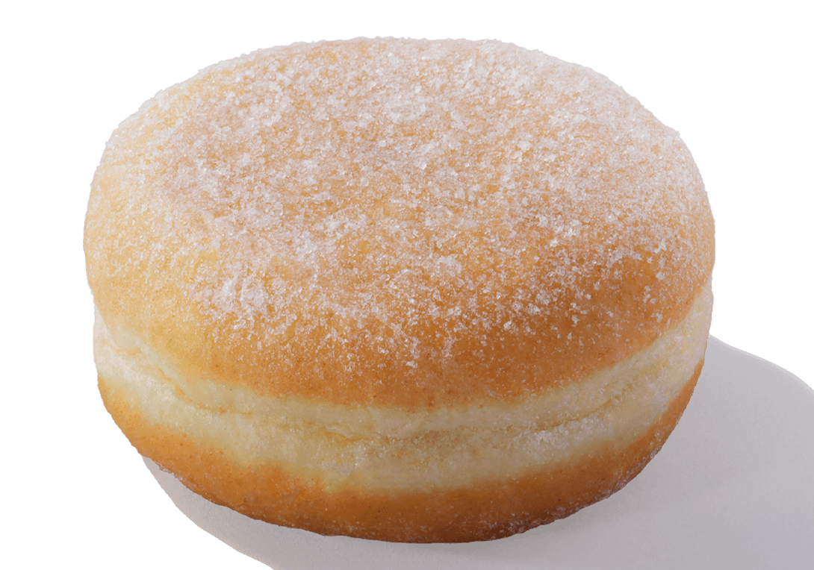
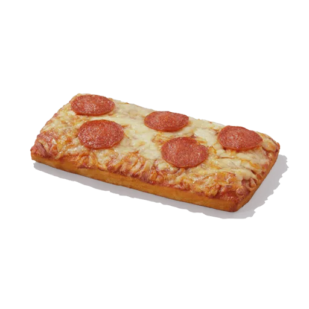
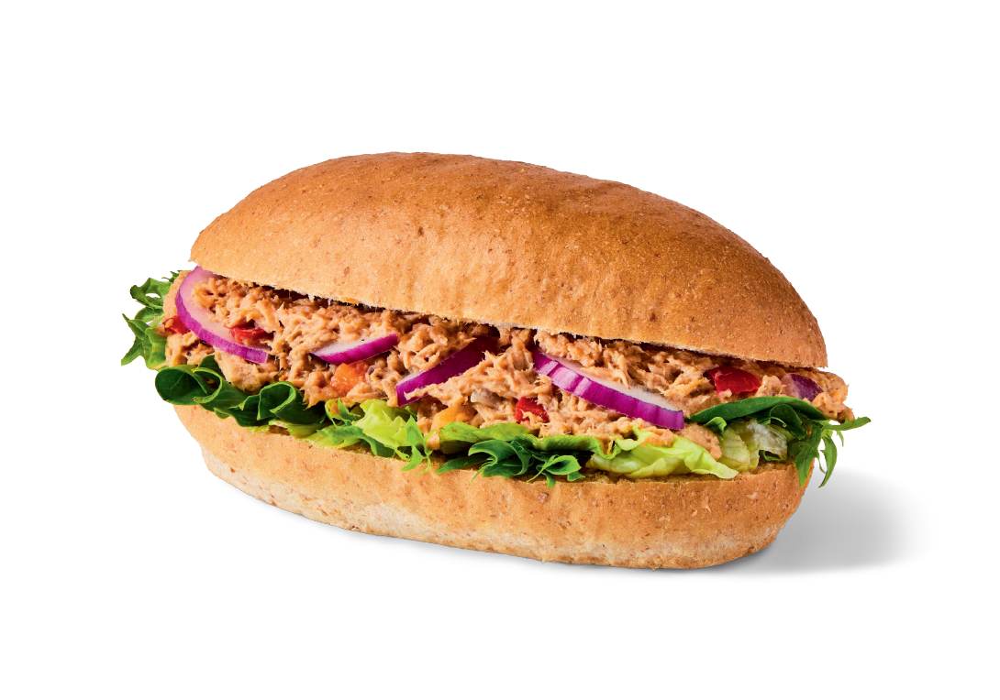
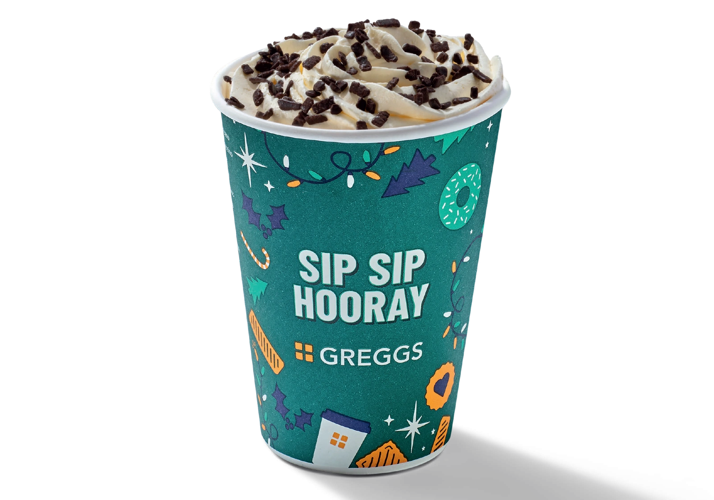
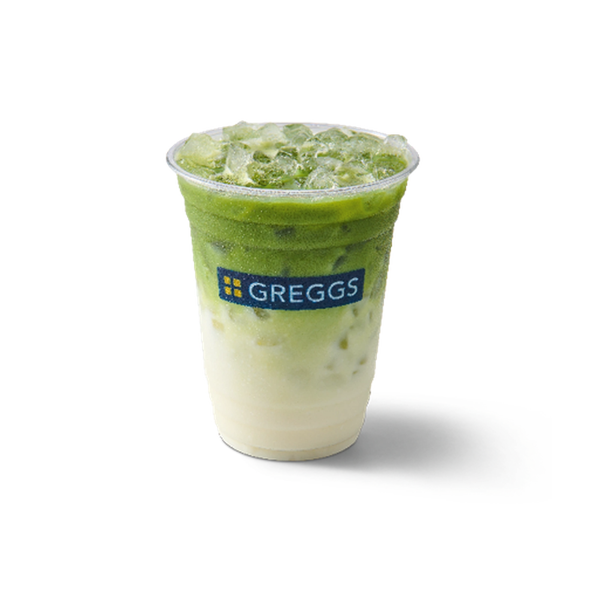

8.9/10 - VERY solid choice . only reason why its not over a 9 is because it used to be cheaper but i love it . perfect for a cold day

9.2/10 - might be bias talking because im a tuna fiend but this sandwich has saved me so many times when ive been hungry but didnt know what to eat

6/10 - didnt really taste the mango as much as i tasted the lemonade but i like lemonade so i wont complain

6.5/10 - its ok but its very dry. the sauces help a little but its still dry

7/10 - it only gets extra points because theres more bacon. otherwise its just as, if not more dry

7.8/10 -about what u can expect from a jam donut rlly . and thats not an insult i mean theres very little you can do to make a jam donut any better
7.5/10 - i have to be in a certain mood for it but the last time i had it i thought it was pretty good, no complaints

1/10 - it was ice cold. HOW did you keep it under a little heater thing and it STILL ended up being ice cold. HOW. i think whoever gave me that pizza that day wanted me dead

3.6/10 - I DONT LIKE ONIONS!!!!!!!!!!! but the rest of it was alright . just tainted by the onion taste
9.5/10 - genuinely perfect for cold days . there are definitely better places to get a hot chocolate but if you're in a hurry it does the job

100/10 - WHY IS IT A SEASONAL DRINK. ITS GORGEOUS. I LOVE IT SO MUCH. ITS THE PERFECT DRINK FROM GREGGS

4/10 - i didnt care much for it . its ok but like ive had better. its good for if ur in a hurry though